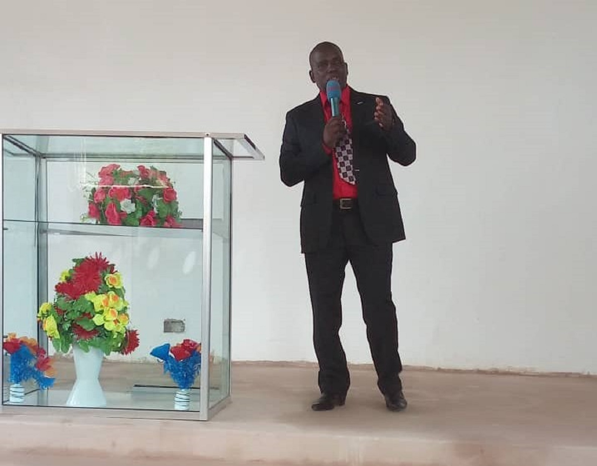

Jerusalem Temple Pwani-Mlandizi (JTP) — kanisa lililojengwa kwa imani, likikua kwa upendo, tangu 2012.

JERUSALEM TEMPLE (JTP) ni kanisa la T.A.G lililoanzishwa mwaka 2012 na linaongozwa na mchungaji kiongozi Mch. Nickodemas Mwasamboma. Kanisa letu zuri lipo Pwani Mlandizi, sehemu moja maarufu inayoitwa Janga.
Ndani ya JTP, kumwabudu Mungu aliye hai ndio asili yetu na ndio utamaduni wa kila mshirika wa kanisa hili. Kanisa tunapenda wageni sana na tunajisikia furaha kuabudu pamoja na wewe.
Tembelea KanisaniKusimama katika pengo kwa niaba ya wale wanaohitaji uponyaji na uhuru.
Kuwaongoza washirika na wageni katika safari yao ya kiroho na kimaisha.
Kujenga msingi imara wa imani kupitia Neno la Mungu kila wiki.
Maarifa ya kuishi maisha matakatifu yanayompendeza Mungu kila siku.
Kwa maana Mungu aliupenda ulimwengu hivi, hata akamtoa Mwanawe pekee.Yohana 3:16